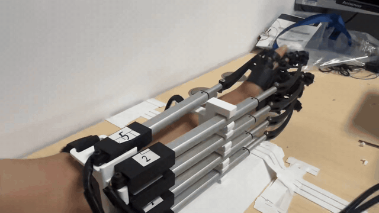

Publications
(*: corresponding author; †: equal contribution)


Re-DirectExo: A Preliminary Study of Illusion-Driven Hand Rehabilitation Exoskeleton
Experience

LV-Robotics Lab | National University of Singapore
Research Assistant
Advisor: Prof. Shuicheng Yan
Aug 2026 – Present

Anyverse Dynamics | Beijing
Robotics Algorithm Intern
Advisor: Prof. Zhongpu Xia
Jun 2026 – Aug 2026
TARS Robotics | Shanghai
Robotics Algorithm Intern
Advisors: Prof. Wenchao Ding, Prof. Zining Wang
Jan 2026 – Jun 2026
Awards
- Outstanding Graduate, Shanghai Jiao Tong University 2026
- Champion, RoboMaster University Championship (National) 2024
- Honorable Mention, Mathematical Contest in Modeling (MCM) 2024